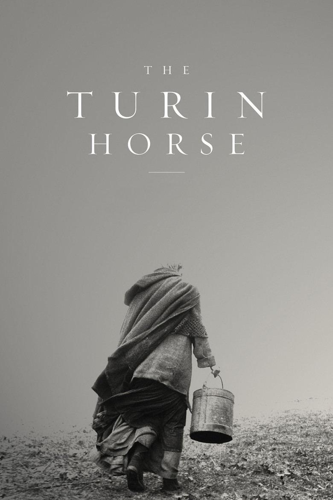

Fiche technique

Synopsis
Turin, 3 janvier 1889 : Friedrich Nietzsche se jette en larmes au cou d'un cheval de fiacre battu par son cocher, avant de sombrer dans dix années de mutisme et de folie. Une voix off rappelle l'anecdote, puis conclut : du cheval, on ne sait pas ce qu'il est advenu. Le film sera cette réponse imaginaire[1][2].
Quelque part dans une plaine balayée par une tempête qui ne faiblit jamais, un paysan au bras mort, sa fille et leur cheval habitent une ferme isolée. Six jours durant, le film suit leurs gestes : s'habiller, puiser l'eau, faire bouillir deux pommes de terre, regarder par la fenêtre. Et six jours durant, le monde se retire par soustractions : le cheval refuse d'avancer, puis de manger ; le puits se tarit ; la tentative de départ échoue ; les lampes s'éteignent — jusqu'à ce que l'obscurité prenne tout[1][2].
Contexte de production
Le projet naît d'une conversation ancienne entre Tarr et l'écrivain László Krasznahorkai, son scénariste de toujours (Sátántangó, Les Harmonies Werckmeister), qui lui avait raconté l'anecdote de Turin[3]. Le tournage, prévu sur 35 jours fin 2008 dans une vallée hongroise, s'étire jusqu'en 2010 au gré d'une météo contraire ; la ferme, le puits et l'écurie sont construits en dur, pierre et bois, pour tenir face au vent des machines[2]. Production tout aussi âpre : T. T. Filmműhely, la société de Tarr, assemble une coproduction hungaro-suisse-allemande-franco-américaine complétée par 240 000 euros d'Eurimages[2].
Surtout, Tarr annonce avant même la première berlinoise que ce film — son neuvième long métrage — sera le dernier : à 55 ans, il estime avoir dit ce qu'il avait à dire, et consacrera la suite à son école de cinéma de Sarajevo, la Film.Factory[2][4]. Il tiendra parole.
Structure narrative
Six jours, trente plans : la structure du film est son sujet. Chaque journée reprend la même liturgie de gestes — l'habillage, le puits, les pommes de terre, la fenêtre — et le récit n'avance que par ce que la répétition perd en route. C'est une Genèse inversée, l'anti-création en six jours : au lieu que le monde s'ajoute, il se soustrait — la force du cheval, l'eau, le feu, la lumière[1][5].
Dans cette mécanique quasi muette, deux irruptions font événement : le voisin Bernhard, venu chercher de l'eau-de-vie, déverse un monologue crépusculaire sur un monde « avili » par ceux qui s'en emparent ; puis une carriole de tsiganes passe en trombe et boit au puits. Ni intrigue ni résolution — seulement des visites, comme les mouches avant l'orage. Le plan-séquence, chez Tarr, n'étire pas le temps : il le rend comptable, jour après jour, de ce qui ne reviendra plus[1][5].
Mise en scène et procédés techniques
Fred Kelemen, chef opérateur des derniers Tarr, filme en noir et blanc trente plans-séquences à la steadicam, souvent de plusieurs minutes, sans aucune ellipse à l'intérieur des actions[2][5]. L'ouverture donne le programme : la caméra tourne autour du cheval lancé dans la tempête, crinière et harnais fouettés par le vent, pendant que montent les cordes graves et obsédantes de Mihály Víg — une « symphonie funeste et lancinante » qui revient en boucle, comme les jours[5].
Le vent est le vrai décor du film — un « vent hivernal [qui] semble balayer la vie vers un gouffre sans fond », écrit la critique française, avec pour seul horizon un arbre pétrifié sur la colline[5]. À l'intérieur, la lumière des lampes à pétrole sculpte les visages comme chez Rembrandt et La Tour ; les fenêtres découpent le dehors en écrans de cinéma primitifs devant lesquels le père et la fille s'assoient, spectateurs de leur propre fin. Quand, au sixième jour, les lampes refusent de brûler alors qu'il reste du pétrole, le film touche à quelque chose que le fantastique n'oserait pas : une extinction sans cause, filmée comme un simple fait[1][2].
Personnages principaux
Ohlsdorfer (János Derzsi), le père au bras droit inerte, est un bloc de survie têtue : il ne commente rien, n'espère rien, continue — et c'est cette continuation nue, boutonner une chemise d'une seule main, manger sa pomme de terre brûlante à pleins doigts, qui tient lieu de tragédie. La fille (Erika Bók, découverte enfant dans Sátántangó) est le centre moral silencieux du film : c'est elle qui puise, habille, cuit, et c'est sur son visage immobile à la fenêtre que Tarr filme la conscience de la fin[2].
Et il y a le cheval — celui de Nietzsche, peut-être. Sa grève est le seul acte libre du récit : refuser d'avancer, refuser de manger, se retirer du monde avant le monde lui-même. Les critiques y ont lu un « refus existentiel face à l'absurde »[5] — l'animal accomplissant ce que le philosophe avait entrevu en l'embrassant : qu'il n'y a parfois plus rien à tirer, au sens propre, de l'existence.
Thèmes
Une apocalypse sans apocalypse, d'abord : pas de comète ni de jugement, seulement un monde qui cesse peu à peu de répondre. Là où la fiction catastrophiste spectacularise la fin, Tarr la domestique — elle a le rythme des corvées et l'odeur des pommes de terre. Le monologue du voisin en donne la clé morale : « l'Homme est incapable de préserver ce dont il s'empare : il souille, tout »[5] — version paysanne de la mort de Dieu nietzschéenne, prononcée entre deux verres d'eau-de-vie.
Vient ensuite la dignité de la répétition : en refaisant chaque jour les mêmes gestes amputés d'un élément, le film demande ce qui reste de l'humain quand tout usage du monde se retire. La réponse tient dans le dernier plan : assis dans le noir devant des pommes de terre crues, le père dit à sa fille « il faut manger ». Ni consolation ni révolte — la persistance comme ultime forme de la vie. C'est aussi, du propre aveu de Tarr, un discours sur la finitude de son cinéma : le réalisateur éteint ses lampes en même temps que celles de ses personnages[2][4].
Réception critique et postérité
Présenté en compétition à la Berlinale 2011, le film repart avec l'Ours d'argent — grand prix du jury — et le prix FIPRESCI de la critique internationale ; la Hongrie le soumet à l'Oscar du film étranger[2]. La critique mondiale le reçoit comme un chef-d'œuvre terminal, exigeant jusqu'à la limite — « terrassant, âpre, prégnant et redoutable », résume une critique française[5], quand d'autres avouent une expérience « presque intolérable » mais capitale[1]. A. O. Scott, dans le New York Times, formule le paradoxe du film :
« Une œuvre qui semble bâtie sur le refus du plaisir peut produire une expérience d'exaltation. » A. O. Scott, New York Times, cité par Wikipédia[2]
Tarr n'a jamais retourné de long métrage, consacrant ses dernières années à la transmission. Sa mort, en janvier 2025, a scellé le statut du Cheval de Turin : la nécrologie du British Film Institute salue en lui le visionnaire du « slow cinema » et voit dans ce chant du cygne « une descente des ténèbres véritablement beckettienne »[4]. Rarement un cinéaste aura à ce point choisi — et réussi — sa dernière image.
Conclusion
Le Cheval de Turin est un film-limite : limite du récit (six jours de gestes), limite du visible (un noir et blanc qui finit par s'éteindre littéralement), limite du cinéma de son auteur, qui y solde trente-quatre ans d'œuvre en trente plans. Ce minimalisme n'a pourtant rien d'un appauvrissement — chaque plan-séquence est d'une ampleur d'opéra, et la ferme battue par les vents rejoint les grands huis clos métaphysiques, de Beckett à Dreyer.
Répondre à la question « qu'est devenu le cheval de Nietzsche ? » par deux heures vingt-six de corvées, c'était affirmer une dernière fois que le cinéma peut regarder ce que la philosophie ne fait que penser : l'usure du monde, la compassion muette, la persistance. Le film s'achève dans le noir, mais c'est un noir habité — quelque part, un père y répète encore à sa fille qu'il faut manger. On ne finit pas mieux une œuvre ; on ne la finit peut-être pas autrement.
Sources
- Wikipédia (fr) — « Le Cheval de Turin » : prologue nietzschéen, structure des six jours, dates de sortie (Berlinale 15 février 2011, France 30 novembre 2011), réception. fr.wikipedia.org/wiki/Le_Cheval_de_Turin
- Wikipédia (en) — « The Turin Horse » : production (tournage 2008-2010, décors en dur, coproduction, Eurimages), 30 plans de Fred Kelemen, musique de Mihály Víg, distribution, Ours d'argent et prix FIPRESCI, citation d'A. O. Scott, annonce du dernier film. en.wikipedia.org/wiki/The_Turin_Horse
- The Movie Database (TMDB) — fiche « The Turin Horse » : genèse du projet (le récit de Krasznahorkai à Tarr), synopsis, affiche. themoviedb.org/movie/81401
- British Film Institute — « Béla Tarr obituary: Hungary's slow-cinema visionary » (janvier 2025) : mort du cinéaste, carrière, Film.Factory de Sarajevo, Le Cheval de Turin comme chant du cygne « beckettien ». bfi.org.uk/features/bela-tarr-obituary
- Silence… Action ! — « [Critique] Le Cheval de Turin (Béla Tarr) », octobre 2011 : analyse française (plans-séquences steadicam, vent, arbre pétrifié, musique, monologue du voisin, « refus existentiel » du cheval, jugement « terrassant, âpre, prégnant et redoutable »). silence-action.com